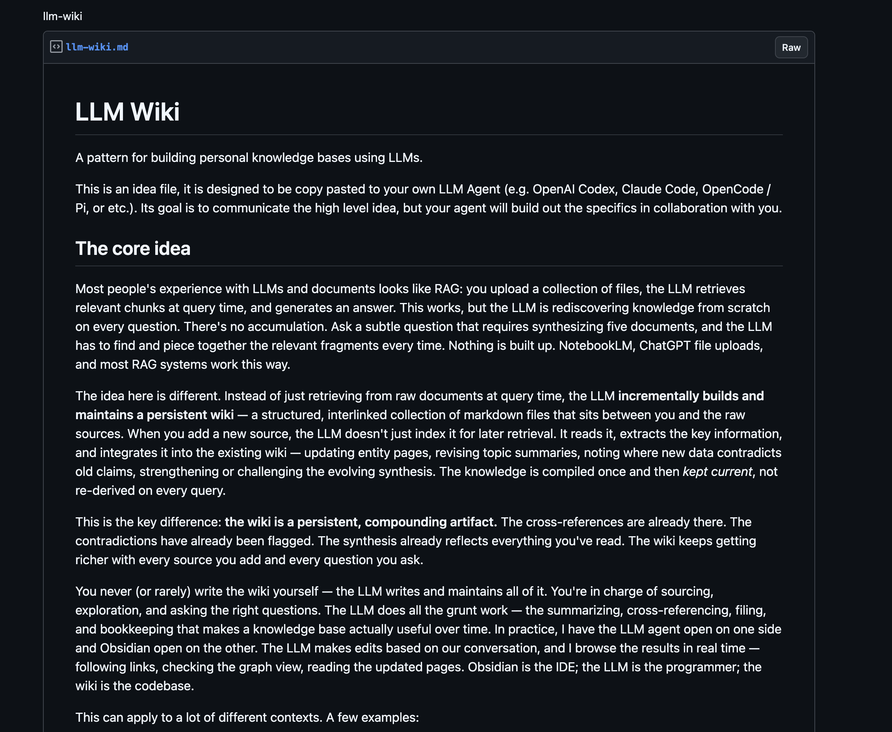
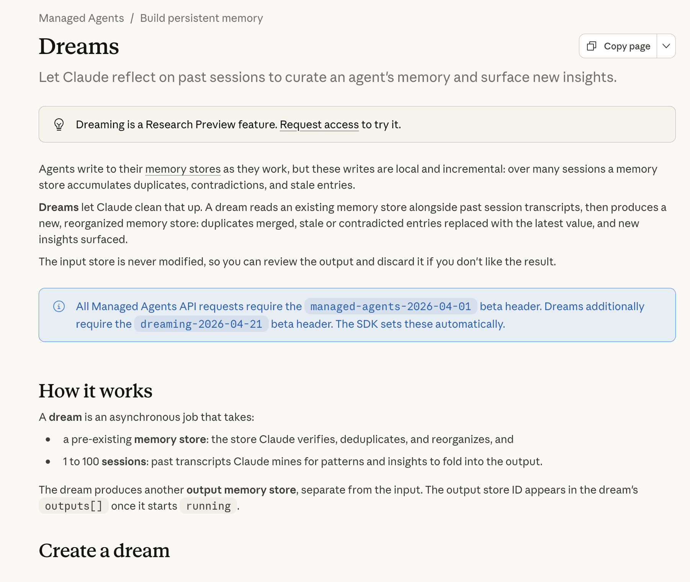
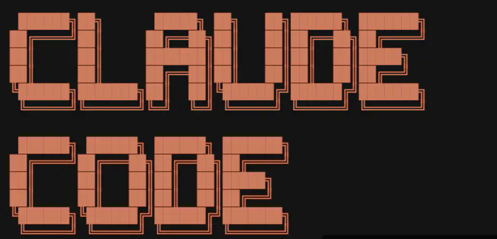
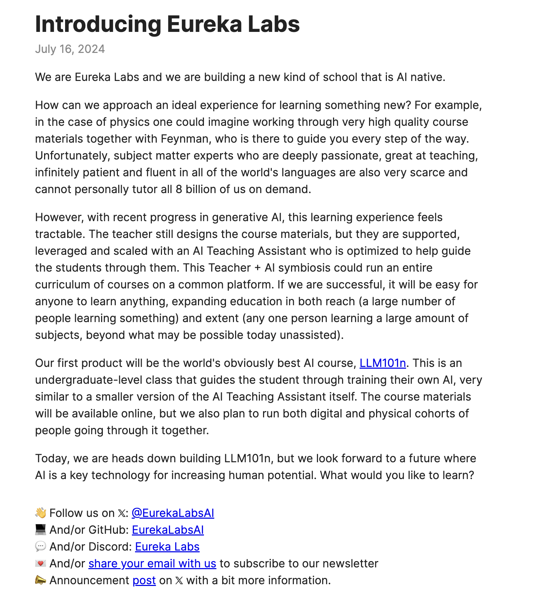
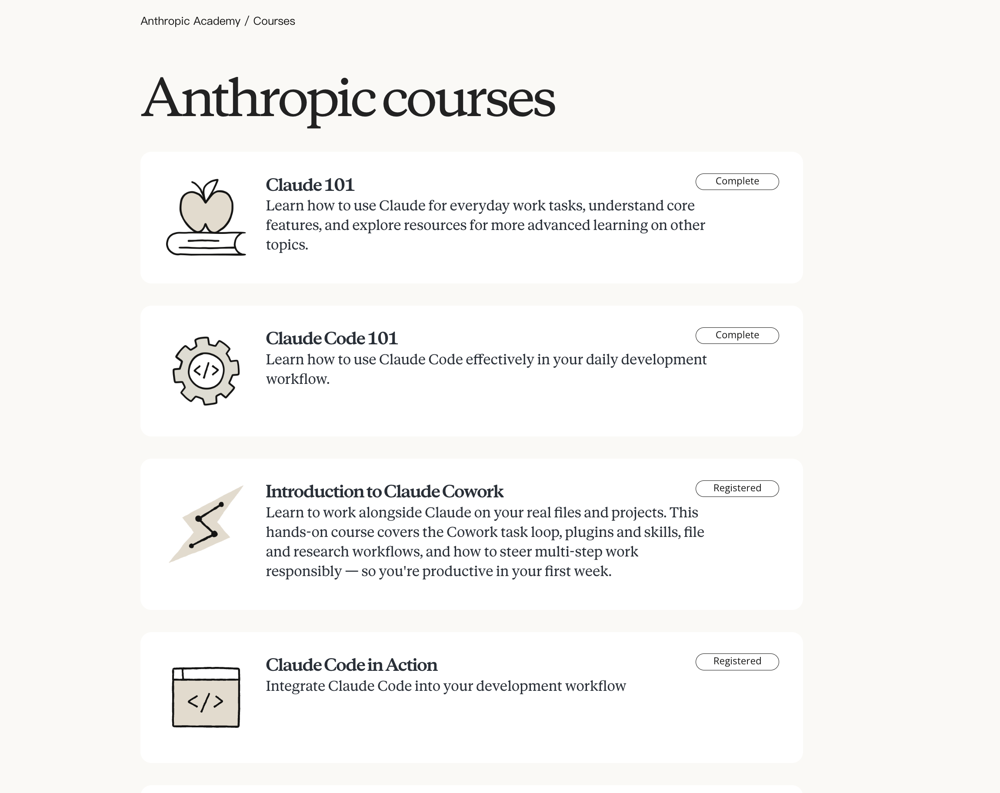

<template id="seg06-merge-template">
  <!-- data-layout-allow-overflow：SEC D 末段 .d-not-filling + Anthropic 卡的 d-axis 在 scale 0.7 + y:280
       平移后底部超画布 205px（视觉被 canvas 1920×1080 viewport 自然 clip，无实际渲染问题）。
       inspect 在 sub-comp wrapper 层级 report 这个 overflow（closest() 不到 sub-comp 内的 attribute），
       需要标在 wrapper 本身。整段 seg06 此类 fade-out 越界都属设计意图 → SKILL.md:402 标 wrap-level -->
  <div data-composition-id="seg06-merge" data-width="1920" data-height="1080" data-layout-allow-overflow="true">
    <style>
      [data-composition-id="seg06-merge"] {
        position: absolute;
        top: 0; left: 0;
        width: 1920px;
        height: 1080px;
        background: transparent;
        color: #2B2622;
        font-family: "Noto Sans SC", "Inter", sans-serif;
        font-variant-numeric: tabular-nums;
      }
      [data-composition-id="seg06-merge"] .sec {
        position: absolute;
        top: 0; left: 0;
        width: 1920px;
        height: 1080px;
      }
      [data-composition-id="seg06-merge"] .scene-content {
        width: 100%;
        height: 100%;
        box-sizing: border-box;
        position: relative;
      }

      /* ── 通用字效 ── */
      [data-composition-id="seg06-merge"] .chrome {
        font-family: "Noto Sans SC", "Inter", sans-serif;
        font-weight: 800;
        letter-spacing: 0.005em;
        line-height: 1.05;
        background-image: linear-gradient(180deg,
          #2B2622 0%, #4a3d33 18%, #806c5b 43%, #c8aa8f 52%, #6b5a4d 67%, #2B2622 100%);
        -webkit-background-clip: text;
        background-clip: text;
        -webkit-text-fill-color: transparent;
        color: transparent;
      }
      [data-composition-id="seg06-merge"] .hot {
        background-image: linear-gradient(180deg, #f5b39a 0%, #d97757 48%, #8b3d28 100%);
        -webkit-background-clip: text;
        background-clip: text;
        -webkit-text-fill-color: transparent;
        color: transparent;
        filter: drop-shadow(0 0 18px rgba(217, 119, 87, 0.32));
      }
      [data-composition-id="seg06-merge"] .mono {
        font-family: "JetBrains Mono", monospace;
      }
      [data-composition-id="seg06-merge"] .chip {
        display: inline-flex;
        align-items: center;
        justify-content: center;
        gap: 8px;
        border-radius: 999px;
        border: 1.5px solid rgba(217, 119, 87, 0.48);
        background: rgba(217, 119, 87, 0.10);
        color: #9A4634;
        font-weight: 650;
        white-space: nowrap;
        padding: 0 18px;
        height: 36px;
        font-size: 18px;
      }
      [data-composition-id="seg06-merge"] .chip.gray {
        border-color: rgba(90, 79, 70, 0.28);
        background: rgba(90, 79, 70, 0.06);
        color: #5A4F46;
      }
      [data-composition-id="seg06-merge"] .chip.hot-solid {
        border-color: rgba(155, 70, 52, 0.95);
        background: #9A4634;
        color: #FFF7EE;
      }

      /* ── 双轨 pipeline（两条 SVG track + 沿轨发光点 + 中央汇合 dot）── */
      [data-composition-id="seg06-merge"] .dual-track {
        position: absolute;
        top: 0; left: 0;
        width: 1920px;
        height: 1080px;
        pointer-events: none;
        z-index: 3;
        overflow: visible;
      }
      [data-composition-id="seg06-merge"] .dual-track .track-path {
        fill: none;
        stroke-width: 3px;
        stroke-linecap: round;
        filter: drop-shadow(0 0 12px rgba(217, 119, 87, 0.45));
      }
      [data-composition-id="seg06-merge"] .dual-track .track-center-glow {
        opacity: 0;
        transform-origin: 960px 580px;
      }
      [data-composition-id="seg06-merge"] .dual-track .track-center-dot {
        opacity: 0;
        transform-origin: 960px 580px;
        filter: drop-shadow(0 0 24px rgba(217, 119, 87, 0.95))
                drop-shadow(0 0 48px rgba(217, 119, 87, 0.55));
      }
      [data-composition-id="seg06-merge"] .dual-track .flow-dot {
        opacity: 0;
        fill: #d97757;
        filter: drop-shadow(0 0 14px rgba(217, 119, 87, 0.95));
      }

      /* ─────────────────── SEC A · 双河立比喻 (0-14.3s) ─────────────────── */
      [data-composition-id="seg06-merge"] .sec-a .scene-content {
        position: relative;
      }
      [data-composition-id="seg06-merge"] .a-darkfill {
        position: absolute;
        top: 0; left: 0;
        width: 1920px; height: 1080px;
        background: #1F1B17;
        z-index: 2;
        opacity: 0;
      }
      [data-composition-id="seg06-merge"] .a-orange-sweep {
        position: absolute;
        top: 540px;
        left: -300px;
        width: 2520px;
        height: 4px;
        background: linear-gradient(90deg,
          rgba(217, 119, 87, 0) 0%,
          rgba(217, 119, 87, 0) 30%,
          rgba(245, 179, 154, 0.9) 48%,
          rgba(217, 119, 87, 1) 50%,
          rgba(245, 179, 154, 0.9) 52%,
          rgba(217, 119, 87, 0) 70%,
          rgba(217, 119, 87, 0) 100%);
        background-size: 600px 100%;
        filter: drop-shadow(0 0 18px rgba(217, 119, 87, 0.85));
        z-index: 3;
        opacity: 0;
        transform: translateX(-1200px);
      }
      [data-composition-id="seg06-merge"] .a-brand {
        position: absolute;
        z-index: 4;
        display: flex;
        flex-direction: column;
        align-items: center;
        gap: 12px;
        opacity: 0;
      }
      [data-composition-id="seg06-merge"] .a-brand.left {
        left: 165px;
        top: 200px;
      }
      [data-composition-id="seg06-merge"] .a-brand.right {
        right: 165px;
        top: 200px;
      }
      [data-composition-id="seg06-merge"] .a-brand .a-portrait {
        width: 84px;
        height: 84px;
        border-radius: 50%;
        overflow: hidden;
        border: 2px solid rgba(217, 119, 87, 0.6);
        box-shadow: 0 8px 28px rgba(43, 38, 34, 0.18);
      }
      [data-composition-id="seg06-merge"] .a-brand .a-portrait img {
        width: 100%; height: 100%; object-fit: cover;
      }
      [data-composition-id="seg06-merge"] .a-brand .a-logo-anthropic {
        width: 140px;
        height: 60px;
        display: flex;
        align-items: center;
        justify-content: center;
      }
      [data-composition-id="seg06-merge"] .a-brand .a-logo-anthropic img {
        width: 100%;
        height: auto;
        max-height: 56px;
      }
      [data-composition-id="seg06-merge"] .a-brand .a-chip-text {
        font-weight: 700;
        font-size: 22px;
        color: #5A4F46;
        letter-spacing: 0.02em;
      }
      [data-composition-id="seg06-merge"] .a-arrows {
        position: absolute;
        top: 230px;
        left: 50%;
        transform: translateX(-50%);
        display: flex;
        gap: 28px;
        align-items: center;
        z-index: 4;
        opacity: 0;
      }
      [data-composition-id="seg06-merge"] .a-arrow-r,
      [data-composition-id="seg06-merge"] .a-arrow-l {
        font-size: 32px;
        color: #d97757;
        font-weight: 700;
      }
      [data-composition-id="seg06-merge"] .a-confluence-text {
        position: absolute;
        top: 700px;
        left: 50%;
        transform: translateX(-50%);
        padding: 0 18px;
        font-size: 40px;
        font-weight: 700;
        color: #2B2622;
        z-index: 4;
        opacity: 0;
        white-space: nowrap;
        overflow: hidden;
      }
      [data-composition-id="seg06-merge"] .a-marker-sweep {
        position: absolute;
        top: 0;
        left: -100%;
        width: 100%;
        height: 100%;
        background: linear-gradient(90deg,
          transparent 0%,
          rgba(217, 119, 87, 0.25) 30%,
          rgba(217, 119, 87, 0.45) 50%,
          rgba(217, 119, 87, 0.25) 70%,
          transparent 100%);
        mix-blend-mode: multiply;
        pointer-events: none;
      }

      /* ─────────────────── 对位卡 layout（B/C/D 共用框架）─────────────────── */
      [data-composition-id="seg06-merge"] .pair-stage {
        position: absolute;
        top: 0; left: 0;
        width: 1920px; height: 1080px;
        z-index: 5;
      }
      [data-composition-id="seg06-merge"] .pair-cards-row {
        position: absolute;
        top: 130px;
        left: 50%;
        transform: translateX(-50%);
        display: flex;
        align-items: stretch;
        gap: 0;
        z-index: 5;
      }
      [data-composition-id="seg06-merge"] .pair-card {
        width: 720px;
        height: 760px;
        background: #F7F2EA;
        border: 1px solid rgba(90, 79, 70, 0.18);
        border-radius: 20px;
        box-shadow: 0 24px 60px rgba(43, 38, 34, 0.08);
        padding: 36px 40px;
        display: flex;
        flex-direction: column;
        align-items: stretch;
        gap: 24px;
        opacity: 0;
        position: relative;
      }
      [data-composition-id="seg06-merge"] .pair-card.hot-border {
        border: 1px solid rgba(217, 119, 87, 0.65);
        box-shadow: 0 24px 60px rgba(217, 119, 87, 0.12);
      }
      [data-composition-id="seg06-merge"] .pair-gap {
        width: 240px;
        position: relative;
        display: flex;
        align-items: center;
        justify-content: center;
      }
      [data-composition-id="seg06-merge"] .pair-chip {
        background: rgba(90, 79, 70, 0.06);
        border: 1px solid rgba(90, 79, 70, 0.18);
        border-radius: 16px;
        padding: 14px 18px;
        text-align: center;
        font-size: 15px;
        color: #5A4F46;
        font-weight: 600;
        line-height: 1.4;
        white-space: nowrap;
        opacity: 0;
      }
      [data-composition-id="seg06-merge"] .pair-chip.hot {
        background: #d97757;
        color: #FFF7EE;
        border-color: rgba(217, 119, 87, 0.95);
      }
      [data-composition-id="seg06-merge"] .pair-equals {
        position: absolute;
        top: 50%;
        left: 50%;
        font-size: 64px;
        font-weight: 800;
        opacity: 0;
        line-height: 1;
      }
      [data-composition-id="seg06-merge"] .pair-bottom-text {
        position: absolute;
        bottom: 100px;
        left: 50%;
        transform: translateX(-50%);
        font-size: 38px;
        font-weight: 700;
        white-space: nowrap;
        z-index: 6;
        opacity: 0;
      }

      /* 卡顶第 1 层品牌识别 */
      [data-composition-id="seg06-merge"] .card-brand-row {
        display: flex;
        align-items: center;
        justify-content: center;
        gap: 16px;
        min-height: 96px;
      }
      [data-composition-id="seg06-merge"] .card-portrait {
        width: 70px;
        height: 70px;
        border-radius: 50%;
        overflow: hidden;
        border: 2px solid rgba(90, 79, 70, 0.22);
      }
      [data-composition-id="seg06-merge"] .card-portrait img {
        width: 100%; height: 100%; object-fit: cover;
      }
      [data-composition-id="seg06-merge"] .card-mono-chip {
        font-family: "JetBrains Mono", monospace;
        font-size: 14px;
        color: #806c5b;
        background: rgba(43, 38, 34, 0.04);
        border: 1px solid rgba(90, 79, 70, 0.18);
        padding: 6px 12px;
        border-radius: 8px;
      }
      [data-composition-id="seg06-merge"] .card-logo {
        height: 80px;
        display: flex;
        align-items: center;
        justify-content: center;
      }
      [data-composition-id="seg06-merge"] .card-logo img {
        max-height: 60px;
        max-width: 220px;
      }
      [data-composition-id="seg06-merge"] .card-logo.tall img {
        max-height: 100px;
        max-width: 110px;
      }
      [data-composition-id="seg06-merge"] .card-icon-pixel {
        height: 90px;
        display: flex;
        align-items: center;
        justify-content: center;
      }
      [data-composition-id="seg06-merge"] .card-icon-pixel img {
        max-height: 90px;
        max-width: 240px;
        image-rendering: pixelated;
      }

      /* 卡标题 chip 层 */
      [data-composition-id="seg06-merge"] .card-title {
        text-align: center;
        font-size: 38px;
        font-weight: 800;
        letter-spacing: 0.01em;
        min-height: 50px;
      }

      /* 卡截图层 */
      [data-composition-id="seg06-merge"] .card-screenshot {
        width: 100%;
        height: 280px;
        border-radius: 12px;
        overflow: hidden;
        border: 1px solid rgba(90, 79, 70, 0.18);
        background: #F0E5D2;
        position: relative;
        opacity: 0;
      }
      [data-composition-id="seg06-merge"] .card-screenshot img {
        width: 100%;
        height: 100%;
        object-fit: cover;
        object-position: top center;
      }

      /* 卡功能描述 spec-fill */
      [data-composition-id="seg06-merge"] .card-spec {
        list-style: none;
        padding: 0;
        margin: 0;
        display: flex;
        flex-direction: column;
        gap: 12px;
      }
      [data-composition-id="seg06-merge"] .card-spec li {
        font-size: 18px;
        color: #5A4F46;
        font-weight: 500;
        line-height: 1.4;
        opacity: 0;
        transform: translateX(-12px);
      }
      [data-composition-id="seg06-merge"] .card-spec li::before {
        content: "·";
        color: #d97757;
        font-weight: 700;
        margin-right: 8px;
      }

      /* B 段右卡记忆增长曲线 */
      [data-composition-id="seg06-merge"] .b-mem-curve {
        width: 100%;
        height: 60px;
        margin-top: 4px;
      }
      [data-composition-id="seg06-merge"] .b-mem-curve path {
        fill: none;
        stroke: #d97757;
        stroke-width: 3;
        stroke-linecap: round;
        stroke-linejoin: round;
      }

      /* B 段左卡文件夹生长 */
      [data-composition-id="seg06-merge"] .b-folder-row {
        display: flex;
        align-items: flex-end;
        justify-content: center;
        gap: 22px;
        margin-top: 4px;
      }
      [data-composition-id="seg06-merge"] .b-folder {
        background: #5A4F46;
        border-radius: 4px 4px 2px 2px;
        position: relative;
        opacity: 0;
        transform-origin: bottom center;
      }
      [data-composition-id="seg06-merge"] .b-folder::before {
        content: "";
        position: absolute;
        top: -6px;
        left: 0;
        width: 40%;
        height: 8px;
        background: #5A4F46;
        border-radius: 4px 4px 0 0;
      }
      [data-composition-id="seg06-merge"] .b-folder.s1 { width: 28px; height: 22px; }
      [data-composition-id="seg06-merge"] .b-folder.s2 { width: 36px; height: 32px; }
      [data-composition-id="seg06-merge"] .b-folder.s3 { width: 48px; height: 44px; }

      /* C 段反向小箭头 + Codex chip */
      [data-composition-id="seg06-merge"] .c-arrow {
        position: absolute;
        top: 16px;
        font-size: 24px;
        color: #806c5b;
        font-weight: 700;
        opacity: 0;
      }
      [data-composition-id="seg06-merge"] .c-arrow.left {
        right: -28px;
      }
      [data-composition-id="seg06-merge"] .c-arrow.right {
        left: -28px;
      }
      [data-composition-id="seg06-merge"] .c-codex-chip {
        display: inline-flex;
        align-items: center;
        gap: 8px;
        background: rgba(43, 38, 34, 0.04);
        border: 1px solid rgba(90, 79, 70, 0.2);
        border-radius: 8px;
        padding: 6px 12px;
        font-size: 14px;
        color: #806c5b;
        align-self: center;
        opacity: 0;
      }
      [data-composition-id="seg06-merge"] .c-codex-chip img {
        width: 16px;
        height: 16px;
        filter: grayscale(1) opacity(0.6);
      }
      /* ── C 右卡完整 cc-window 演示（替代产品页缩略）── */
      [data-composition-id="seg06-merge"] .c-term {
        background: linear-gradient(180deg, #0d0d12 0%, #08080c 100%);
        border: 1px solid rgba(255, 255, 255, 0.08);
        border-radius: 12px;
        box-shadow:
          0 24px 60px rgba(0, 0, 0, 0.45),
          0 0 0 1px rgba(255, 255, 255, 0.04) inset,
          0 0 60px rgba(217, 119, 87, 0.18);
        overflow: hidden;
        opacity: 0;
      }
      [data-composition-id="seg06-merge"] .c-term-chrome {
        display: flex;
        align-items: center;
        gap: 8px;
        padding: 10px 14px;
        background: linear-gradient(180deg, #1b1b22, #131319);
        border-bottom: 1px solid rgba(255, 255, 255, 0.05);
      }
      [data-composition-id="seg06-merge"] .c-term-dot {
        width: 11px;
        height: 11px;
        border-radius: 50%;
      }
      [data-composition-id="seg06-merge"] .c-term-dot.r { background: #ff5f57; }
      [data-composition-id="seg06-merge"] .c-term-dot.y { background: #febc2e; }
      [data-composition-id="seg06-merge"] .c-term-dot.g { background: #28c840; }
      [data-composition-id="seg06-merge"] .c-term-title {
        flex: 1;
        text-align: center;
        font-family: "JetBrains Mono", monospace;
        font-size: 12px;
        color: rgba(255, 255, 255, 0.52);
        letter-spacing: 0.02em;
      }
      [data-composition-id="seg06-merge"] .c-term-pulse {
        width: 7px;
        height: 7px;
        border-radius: 50%;
        background: #d97757;
        box-shadow: 0 0 10px #d97757;
      }
      [data-composition-id="seg06-merge"] .c-term-body {
        padding: 16px 18px 18px;
        font-family: "JetBrains Mono", monospace;
        font-size: 14px;
        line-height: 1.55;
        color: rgba(255, 255, 255, 0.92);
        min-height: 280px;
      }
      [data-composition-id="seg06-merge"] .c-term-line {
        margin-bottom: 8px;
        white-space: nowrap;
        opacity: 0;
      }
      [data-composition-id="seg06-merge"] .c-term-caret {
        color: #5eead4;
        font-weight: 700;
        margin-right: 8px;
      }
      [data-composition-id="seg06-merge"] .c-term-cmd { color: #fff; }
      [data-composition-id="seg06-merge"] .c-term-arg { color: #fde68a; }
      [data-composition-id="seg06-merge"] .c-term-cursor {
        display: inline-block;
        margin-left: 2px;
        color: #5eead4;
        animation: cc-blink 0.9s steps(1) infinite;
      }
      [data-composition-id="seg06-merge"] .c-term-thinking {
        color: rgba(217, 119, 87, 0.95);
        font-size: 13px;
      }
      [data-composition-id="seg06-merge"] .c-term-spinner {
        display: inline-block;
        margin-right: 8px;
        color: #d97757;
      }
      [data-composition-id="seg06-merge"] .c-term-arrow {
        color: #d97757;
        font-weight: 700;
        margin-right: 8px;
      }
      [data-composition-id="seg06-merge"] .c-term-tool { color: #fff; margin-right: 8px; }
      [data-composition-id="seg06-merge"] .c-term-target { color: rgba(255,255,255,0.55); }
      [data-composition-id="seg06-merge"] .c-term-badge {
        display: inline-block;
        padding: 1px 7px;
        font-size: 11px;
        font-weight: 700;
        border-radius: 4px;
        margin-left: 8px;
      }
      [data-composition-id="seg06-merge"] .c-term-badge.ok {
        color: #8dffb8;
        background: rgba(141, 255, 184, 0.08);
        border: 1px solid rgba(141, 255, 184, 0.4);
      }
      [data-composition-id="seg06-merge"] .c-term-badge.run {
        color: #d97757;
        background: rgba(217, 119, 87, 0.12);
        border: 1px solid rgba(217, 119, 87, 0.5);
      }
      [data-composition-id="seg06-merge"] .c-term-diff {
        margin-top: 6px;
        margin-bottom: 8px;
        padding: 10px 12px;
        background: rgba(255, 255, 255, 0.025);
        border-left: 2px solid #d97757;
        border-radius: 4px;
        font-size: 12.5px;
        line-height: 1.55;
      }
      [data-composition-id="seg06-merge"] .c-term-diff .add { color: #8dffb8; }
      [data-composition-id="seg06-merge"] .c-term-diff .del { color: #ff8a80; }
      [data-composition-id="seg06-merge"] .c-term-done {
        font-size: 13.5px;
        margin-top: 2px;
      }
      [data-composition-id="seg06-merge"] .c-term-check {
        color: #8dffb8;
        font-weight: 700;
        margin-right: 8px;
      }
      @keyframes cc-blink {
        50% { opacity: 0; }
      }

      /* D-2 课程 chip 阵列 + 横轴 */
      [data-composition-id="seg06-merge"] .d-course-grid {
        display: grid;
        grid-template-columns: repeat(3, 1fr);
        gap: 8px 10px;
        width: 100%;
        margin-top: 6px;
      }
      [data-composition-id="seg06-merge"] .d-course-chip {
        background: #F7F2EA;
        border: 1px solid rgba(90, 79, 70, 0.22);
        border-radius: 999px;
        padding: 6px 10px;
        font-size: 16px;
        color: #5A4F46;
        font-weight: 600;
        text-align: center;
        opacity: 0;
      }
      [data-composition-id="seg06-merge"] .d-axis {
        position: relative;
        margin-top: 14px;
        height: 28px;
        opacity: 0;
      }
      [data-composition-id="seg06-merge"] .d-axis-line {
        position: absolute;
        top: 13px;
        left: 60px;
        right: 60px;
        height: 2px;
        background: #5A4F46;
      }
      [data-composition-id="seg06-merge"] .d-axis-left,
      [data-composition-id="seg06-merge"] .d-axis-right {
        position: absolute;
        top: 0;
        font-size: 14px;
        color: #5A4F46;
        font-weight: 700;
      }
      [data-composition-id="seg06-merge"] .d-axis-left { left: 0; }
      [data-composition-id="seg06-merge"] .d-axis-right { right: 0; }

      /* D 段双卡间 "不是填补" chip */
      [data-composition-id="seg06-merge"] .d-not-filling {
        position: absolute;
        bottom: 60px;
        left: 50%;
        transform: translateX(-50%);
        background: rgba(90, 79, 70, 0.08);
        border: 1px solid rgba(90, 79, 70, 0.22);
        border-radius: 10px;
        padding: 10px 18px;
        font-size: 16px;
        color: #5A4F46;
        font-weight: 600;
        white-space: nowrap;
        opacity: 0;
      }

      /* D-3 触达 / 风格 / 布道者 */
      [data-composition-id="seg06-merge"] .d3-stage {
        position: absolute;
        top: 80px;
        left: 50%;
        transform: translateX(-50%);
        width: 1200px;
        display: flex;
        flex-direction: column;
        align-items: center;
        gap: 18px;
        z-index: 8;
        opacity: 0;
      }
      [data-composition-id="seg06-merge"] .d3-headline-row {
        display: flex;
        gap: 80px;
        align-items: center;
      }
      [data-composition-id="seg06-merge"] .d3-headline {
        font-size: 56px;
        font-weight: 800;
        opacity: 0;
      }
      [data-composition-id="seg06-merge"] .d3-evidence-row {
        display: flex;
        gap: 80px;
        margin-top: 6px;
      }
      [data-composition-id="seg06-merge"] .d3-evidence {
        background: #F7F2EA;
        border: 1px solid rgba(90, 79, 70, 0.2);
        border-radius: 12px;
        padding: 14px 22px;
        text-align: center;
        opacity: 0;
        min-width: 280px;
      }
      [data-composition-id="seg06-merge"] .d3-evidence.hot {
        background: #d97757;
        color: #FFF7EE;
        border-color: rgba(217, 119, 87, 0.95);
      }
      [data-composition-id="seg06-merge"] .d3-evidence .e-label {
        font-size: 14px;
        font-weight: 600;
        margin-bottom: 4px;
        opacity: 0.78;
      }
      [data-composition-id="seg06-merge"] .d3-evidence .e-value {
        font-size: 22px;
        font-weight: 800;
      }
      [data-composition-id="seg06-merge"] .d3-evangelist {
        margin-top: 12px;
        font-size: 64px;
        font-weight: 800;
        letter-spacing: 0.01em;
        position: relative;
        opacity: 0;
      }
      [data-composition-id="seg06-merge"] .d3-evangelist .marker {
        position: absolute;
        left: -8%;
        bottom: 6px;
        width: 116%;
        height: 22px;
        background: linear-gradient(180deg, rgba(217, 119, 87, 0.55) 0%, rgba(217, 119, 87, 0.18) 100%);
        z-index: -1;
        transform-origin: left center;
        transform: scaleX(0);
        border-radius: 4px;
      }

      /* ─────────────────── SEC E · 殊途同归 (176.7-199.0s) ─────────────────── */
      [data-composition-id="seg06-merge"] .e-hero {
        position: absolute;
        top: 380px;
        left: 50%;
        transform: translateX(-50%);
        text-align: center;
        z-index: 9;
        opacity: 0;
      }
      [data-composition-id="seg06-merge"] .e-supra {
        font-size: 52px;
        font-weight: 800;
        letter-spacing: 0.04em;
        -webkit-text-stroke: 1px #d97757;
        color: rgba(43, 38, 34, 0.18);
        margin-bottom: 28px;
        opacity: 0;
      }
      [data-composition-id="seg06-merge"] .e-mega {
        font-size: 132px;
        font-weight: 900;
        letter-spacing: 0.01em;
        line-height: 1.0;
        filter: blur(14px);
        opacity: 0;
      }
      [data-composition-id="seg06-merge"] .e-footnote {
        position: absolute;
        bottom: 80px;
        left: 50%;
        transform: translateX(-50%);
        background: #F7F2EA;
        border: 1px solid rgba(90, 79, 70, 0.28);
        border-radius: 12px;
        padding: 10px 18px;
        font-size: 16px;
        color: #806c5b;
        font-weight: 600;
        opacity: 0;
        z-index: 9;
      }

      /* ─────────────────── SEC F · 桥接 seg07 (199.0-206.6s) ─────────────────── */
      [data-composition-id="seg06-merge"] .sec-f .scene-content {
        background: #F0E5D2;
        opacity: 0;
      }
      [data-composition-id="seg06-merge"] .f-anchor {
        position: absolute;
        top: 240px;
        left: 50%;
        transform: translateX(-50%);
        text-align: center;
      }
      [data-composition-id="seg06-merge"] .f-anchor-chip {
        display: inline-flex;
        align-items: center;
        gap: 10px;
        background: rgba(90, 79, 70, 0.06);
        border: 1px solid rgba(217, 119, 87, 0.55);
        color: #5A4F46;
        font-weight: 700;
        font-size: 26px;
        padding: 14px 24px;
        border-radius: 14px;
        opacity: 0;
      }
      [data-composition-id="seg06-merge"] .f-question {
        margin-top: 60px;
        font-size: 84px;
        font-weight: 800;
        opacity: 0;
      }
      [data-composition-id="seg06-merge"] .f-question .qmark {
        color: #8b3d28;
        margin-left: 4px;
      }
      [data-composition-id="seg06-merge"] .f-cards-row {
        position: absolute;
        top: 660px;
        left: 50%;
        transform: translateX(-50%);
        display: flex;
        gap: 36px;
        justify-content: center;
      }
      [data-composition-id="seg06-merge"] .f-card {
        width: 280px;
        height: 200px;
        background: #F7F2EA;
        border: 1px solid rgba(90, 79, 70, 0.28);
        border-radius: 16px;
        display: flex;
        align-items: center;
        justify-content: center;
        opacity: 0;
      }
      [data-composition-id="seg06-merge"] .f-card .num {
        font-size: 88px;
        font-weight: 900;
        opacity: 0.65;
      }
      [data-composition-id="seg06-merge"] .f-cards-chip {
        position: absolute;
        top: 600px;
        left: 50%;
        transform: translateX(-50%);
        opacity: 0;
      }
    </style>

    <!-- ═════════ 双轨 pipeline（左右两条 SVG track + 沿轨光点 + 中央汇合 dot）═════════ -->
    <svg class="dual-track" id="dualTrack" xmlns="http://www.w3.org/2000/svg" viewBox="0 0 1920 1080" preserveAspectRatio="none">
      <defs>
        <linearGradient id="trackGradL" x1="0" x2="1" y1="0" y2="0">
          <stop offset="0%" stop-color="#d97757" stop-opacity="0.10"/>
          <stop offset="40%" stop-color="#d97757" stop-opacity="0.55"/>
          <stop offset="100%" stop-color="#d97757" stop-opacity="0.95"/>
        </linearGradient>
        <linearGradient id="trackGradR" x1="1" x2="0" y1="0" y2="0">
          <stop offset="0%" stop-color="#d97757" stop-opacity="0.10"/>
          <stop offset="40%" stop-color="#d97757" stop-opacity="0.55"/>
          <stop offset="100%" stop-color="#d97757" stop-opacity="0.95"/>
        </linearGradient>
        <linearGradient id="trackGradMerged" x1="0" x2="1" y1="0" y2="0">
          <stop offset="0%" stop-color="#d97757" stop-opacity="0.05"/>
          <stop offset="50%" stop-color="#d97757" stop-opacity="0.95"/>
          <stop offset="100%" stop-color="#d97757" stop-opacity="0.05"/>
        </linearGradient>
        <radialGradient id="centerGlowGrad" cx="50%" cy="50%" r="50%">
          <stop offset="0%" stop-color="#FFE6D0" stop-opacity="1"/>
          <stop offset="35%" stop-color="#d97757" stop-opacity="0.7"/>
          <stop offset="70%" stop-color="#d97757" stop-opacity="0.18"/>
          <stop offset="100%" stop-color="#d97757" stop-opacity="0"/>
        </radialGradient>
      </defs>

      <!-- 左 track：起点 (240, 360) 水平到 (760, 360)，再曲线收到中央汇合点 (960, 580) -->
      <path id="leftTrack" class="track-path"
            d="M 240 360 L 760 360 Q 880 360 940 460 Q 950 540 960 580"
            stroke="url(#trackGradL)" />
      <!-- 右 track：起点 (1680, 360) 水平到 (1160, 360)，再曲线收到中央汇合点 (960, 580) -->
      <path id="rightTrack" class="track-path"
            d="M 1680 360 L 1160 360 Q 1040 360 980 460 Q 970 540 960 580"
            stroke="url(#trackGradR)" />
      <!-- 融合轨道（SEC E 末才显示）：贯穿屏幕 -->
      <path id="mergedTrack" class="track-path"
            d="M 240 360 L 760 360 Q 880 360 940 460 Q 950 540 960 580 Q 970 540 980 460 Q 1040 360 1160 360 L 1680 360"
            stroke="url(#trackGradMerged)" opacity="0" stroke-width="5" />

      <!-- 中央 glow + dot -->
      <circle id="trackCenterGlow" class="track-center-glow"
              cx="960" cy="580" r="180" fill="url(#centerGlowGrad)" />
      <circle id="trackCenterDot" class="track-center-dot"
              cx="960" cy="580" r="14" fill="#d97757" />

      <!-- 流动光点：左 3 + 右 3 -->
      <circle class="flow-dot" data-flow-l="0" cx="240" cy="360" r="6"/>
      <circle class="flow-dot" data-flow-l="1" cx="240" cy="360" r="6"/>
      <circle class="flow-dot" data-flow-l="2" cx="240" cy="360" r="6"/>
      <circle class="flow-dot" data-flow-r="0" cx="1680" cy="360" r="6"/>
      <circle class="flow-dot" data-flow-r="1" cx="1680" cy="360" r="6"/>
      <circle class="flow-dot" data-flow-r="2" cx="1680" cy="360" r="6"/>
    </svg>

    <!-- ═════════ SEC A · 双河立比喻 (0-14.3s) ═════════ -->
    <div class="sec sec-a">
      <div class="scene-content">
        <!-- 承接 seg05 末暗色底（1.2s 后开始切到米色）-->
        <div class="a-darkfill"></div>
        <!-- Claude 橙光横扫 -->
        <div class="a-orange-sweep"></div>

        <!-- 汇流点上方 "已经汇流" chrome 小字 + marker sweep -->
        <div class="a-confluence-text chrome">
          已经汇流
          <div class="a-marker-sweep"></div>
        </div>

        <!-- 左河上方品牌锚点 -->
        <div class="a-brand left">
          <div class="a-portrait"></div>
          <div class="a-chip-text">Karpathy · 卡帕西</div>
        </div>

        <!-- 右河上方品牌锚点 -->
        <div class="a-brand right">
          <div class="a-logo-anthropic"></div>
          <div class="a-chip-text">Anthropic · A 社</div>
        </div>

        <!-- 反向小箭头：指向汇流点 -->
        <div class="a-arrows">
          <span class="a-arrow-r">→</span>
          <span class="a-arrow-l">←</span>
        </div>
      </div>
    </div>

    <!-- ═════════ SEC B · 第一组对位 LLM Wiki ↔ Claude Memory (14.3-59.1s) ═════════ -->
    <div class="sec sec-b" style="opacity:0;">
      <div class="scene-content">
        <div class="pair-cards-row">
          <!-- 左卡 LLM Wiki -->
          <div class="pair-card b-left">
            <div class="card-brand-row">
              <div class="card-portrait"></div>
              <div class="card-mono-chip">gist.github.com</div>
            </div>
            <div class="card-title hot">LLM Wiki</div>
            <div class="card-screenshot b-left-shot">
              
            </div>
            <ul class="card-spec">
              <li>AI 整理笔记</li>
              <li>SOP / 文档结构</li>
              <li>生长的知识库</li>
            </ul>
            <div class="b-folder-row">
              <div class="b-folder s1"></div>
              <div class="b-folder s2"></div>
              <div class="b-folder s3"></div>
            </div>
          </div>

          <!-- 中间对位 chip + `=` 等号 -->
          <div class="pair-gap">
            <div class="pair-equals chrome" data-eq>=</div>
            <div class="pair-chip" data-pair-chip>第一组对位 · 01 / 03</div>
          </div>

          <!-- 右卡 Claude Memory · Dreaming -->
          <div class="pair-card b-right">
            <div class="card-brand-row">
              <div class="card-logo"></div>
            </div>
            <div class="card-title hot">Memory · 睡眠记忆 / Dreaming</div>
            <div class="card-screenshot b-right-shot">
              
            </div>
            <ul class="card-spec">
              <li>后台自整理 session transcripts</li>
              <li>合并去重 / 沉淀洞察</li>
              <li>memory store 越用越懂你</li>
            </ul>
            <svg class="b-mem-curve" viewBox="0 0 280 60" preserveAspectRatio="none">
              <path id="bMemCurve" d="M 10 50 L 70 44 L 130 32 L 190 20 L 250 8" stroke-dasharray="600" stroke-dashoffset="600" />
            </svg>
          </div>
        </div>

        <!-- B 段末 chrome 小字标语 -->
        <div class="pair-bottom-text chrome" data-b-bottom>把你的工作方式 · 写死在上下文</div>
      </div>
    </div>

    <!-- ═════════ SEC C · 第二组对位 vibe coding ↔ Claude Code (59.1-101.7s) ═════════ -->
    <div class="sec sec-c" style="opacity:0;">
      <div class="scene-content">
        <div class="pair-cards-row">
          <!-- 左卡 vibe coding -->
          <div class="pair-card c-left">
            <span class="c-arrow left" data-c-arrow-l data-layout-allow-overflow="true">→</span>
            <div class="card-brand-row">
              <div class="card-portrait"></div>
              <div class="card-mono-chip">x.com</div>
            </div>
            <div class="card-title hot">vibe coding</div>
            <div class="card-screenshot c-left-shot">
              
            </div>
            <ul class="card-spec">
              <li>自然语言描述需求</li>
              <li>AI 写代码</li>
              <li>人坐在旁边把方向</li>
            </ul>
          </div>

          <!-- 中间对位 chip + `=` 等号 -->
          <div class="pair-gap">
            <div class="pair-equals chrome" data-eq>=</div>
            <div class="pair-chip" data-pair-chip>第二组对位 · 02 / 03</div>
          </div>

          <!-- 右卡 Claude Code（像素拟人图标 + 完整 cc-window 多行演示）-->
          <div class="pair-card c-right">
            <span class="c-arrow right" data-c-arrow-r data-layout-allow-overflow="true">←</span>
            <div class="card-brand-row">
              <div class="card-icon-pixel"></div>
            </div>
            <div class="card-title hot">Claude Code</div>

            <!-- 完整 cc-window 演示（mac chrome + prompt typewriter + thinking + tool log + diff + done）-->
            <div class="c-term" data-c-term>
              <div class="c-term-chrome">
                <span class="c-term-dot r"></span>
                <span class="c-term-dot y"></span>
                <span class="c-term-dot g"></span>
                <span class="c-term-title">claude-code &nbsp;·&nbsp; ~/xcyj-demo</span>
                <span class="c-term-pulse"></span>
              </div>
              <div class="c-term-body">
                <!-- Line 1: prompt -->
                <div class="c-term-line c-term-prompt" data-c-line="1">
                  <span class="c-term-caret">❯</span>
                  <span class="c-term-cmd">claude </span><span class="c-term-arg">"帮我改一下这个 bug"</span><span class="c-term-cursor">▋</span>
                </div>
                <!-- Line 2: thinking -->
                <div class="c-term-line c-term-thinking" data-c-line="2">
                  <span class="c-term-spinner" data-c-spin>◐</span>
                  <span>Thinking...</span>
                </div>
                <!-- Line 3-4: tool calls -->
                <div class="c-term-line" data-c-line="3">
                  <span class="c-term-arrow">→</span>
                  <span class="c-term-tool">Read</span>
                  <span class="c-term-target">src/api.ts</span>
                  <span class="c-term-badge ok">ok</span>
                </div>
                <div class="c-term-line" data-c-line="4">
                  <span class="c-term-arrow">→</span>
                  <span class="c-term-tool">Edit</span>
                  <span class="c-term-target">src/api.ts</span>
                  <span class="c-term-badge run">run</span>
                </div>
                <!-- Line 5: diff block -->
                <div class="c-term-line c-term-diff" data-c-line="5">
                  <div><span class="del">- if (user.id == null)</span></div>
                  <div><span class="add">+ if (user?.id == null)</span></div>
                </div>
                <!-- Line 6: done -->
                <div class="c-term-line c-term-done" data-c-line="6">
                  <span class="c-term-check">✓</span>
                  <span>3 lines changed · tests pass</span>
                </div>
              </div>
            </div>

            <ul class="card-spec" style="margin-top:6px;">
              <li>vibe coding 最成熟实现</li>
              <li>自然语言 → 代码</li>
              <li>人在改方向</li>
            </ul>

            <div class="c-codex-chip" data-c-codex>
              
              <span>Codex 也很好用</span>
            </div>
          </div>
        </div>

        <div class="pair-bottom-text chrome" data-c-bottom>自然语言 → 代码 · 你在改方向</div>
      </div>
    </div>

    <!-- ═════════ SEC D · 第三组对位 Eureka ↔ Anthropic Academy (101.7-176.7s) ═════════ -->
    <!-- data-layout-allow-overflow：SEC D 末段双卡 + d-not-filling 同步 scale 0.7 + y:280 fade-out，
         设计意图是把两卡推到底部当作"背景参照"，让 D-3 stage 上前 —— 这段的 layout 越界是故意的 -->
    <div class="sec sec-d" style="opacity:0;" data-layout-allow-overflow="true">
      <div class="scene-content">
        <!-- pair-cards-row 在 t=151s 被 scale 0.7 + y:280 平移做 D-3 阶段 fade-out，axis 内容可能贴底 →
             标 data-layout-allow-overflow 让 inspect 跳过这块（SKILL.md:402）-->
        <div class="pair-cards-row" data-layout-allow-overflow="true">
          <!-- 左卡 Eureka 实验室 -->
          <div class="pair-card d-left hot-border">
            <div class="card-brand-row">
              <div class="card-logo tall"></div>
            </div>
            <div class="card-title hot">Eureka 实验室</div>
            <div class="card-screenshot d-eureka-shot" style="height: 220px;">
              
            </div>
            <div class="d-tweet-crop" data-d-tweet-crop style="
              width: 100%;
              height: 80px;
              border-radius: 8px;
              overflow: hidden;
              border: 1px solid rgba(90, 79, 70, 0.22);
              position: relative;
              opacity: 0;
              background: #F7F2EA;
              display: flex;
              align-items: center;
              padding: 12px 14px;
              font-size: 16px;
              color: #2B2622;
              font-weight: 600;
              line-height: 1.4;
            ">
              <span data-d-tweet-text>对教育依然保持热情，打算在合适的时机重启</span>
              <span class="d-tweet-marker" style="
                position: absolute;
                top: 0;
                left: -100%;
                width: 100%;
                height: 100%;
                background: linear-gradient(90deg, transparent 0%, rgba(217, 119, 87, 0.35) 50%, transparent 100%);
                mix-blend-mode: multiply;
                pointer-events: none;
              "></span>
            </div>
            <div style="display:flex;justify-content:center;margin-top:6px;">
              <span class="chip gray" data-d-pause-chip style="opacity:0;">· 暂停中 · pause</span>
            </div>
          </div>

          <!-- 中间对位 chip · 03 / 03（Claude 橙 solid）-->
          <div class="pair-gap">
            <div class="pair-equals chrome" data-eq>=</div>
            <div class="pair-chip hot" data-pair-chip>第三组对位 · 03 / 03</div>
          </div>

          <!-- 右卡 Anthropic Academy -->
          <div class="pair-card d-right hot-border">
            <div class="card-brand-row">
              <div class="card-logo"></div>
            </div>
            <div class="card-title hot">Anthropic 学院</div>
            <div class="card-screenshot d-acad-shot" style="height: 380px;">
              
            </div>
            <div style="display:flex;justify-content:center;margin-top:6px;">
              <span class="chip hot-solid" data-d-17chip style="opacity:0;font-size:18px;height:36px;font-weight:700;">17 门课程</span>
            </div>
            <div class="d-course-grid">
              <div class="d-course-chip" data-d-course="0">Claude 101</div>
              <div class="d-course-chip" data-d-course="1">Claude Code 101</div>
              <div class="d-course-chip" data-d-course="2">Cowork</div>
              <div class="d-course-chip" data-d-course="3">Code in Action</div>
              <div class="d-course-chip" data-d-course="4">Prompt Engineering</div>
              <div class="d-course-chip" data-d-course="5">MCP / Tool Use</div>
            </div>
            <div class="d-axis" data-d-axis>
              <div class="d-axis-left">非技术岗</div>
              <div class="d-axis-line"></div>
              <div class="d-axis-right">技术岗</div>
            </div>
          </div>
        </div>

        <!-- D 段双卡间 "不是填补" chip（t=151s 跟 pair-cards-row 同步 scale 0.7 + y:280 → 末段贴底，
             标 data-layout-allow-overflow 让 inspect 跳过这块（SKILL.md:402）-->
        <div class="d-not-filling" data-d-not-filling data-layout-allow-overflow="true">不是填补 / A 社自己在做</div>

        <!-- D-3 触达 / 风格 / 布道者 stage -->
        <div class="d3-stage" data-d3-stage>
          <div class="d3-headline-row">
            <div class="d3-headline hot" data-d3-reach>触达 · reach</div>
            <div class="d3-headline hot" data-d3-style>风格 · style</div>
          </div>
          <div class="d3-evidence-row">
            <div class="d3-evidence" data-d3-evi-reach>
              <div class="e-label">A 社 17 门课</div>
              <div class="e-value">不知道的人很多</div>
            </div>
            <div class="d3-evidence hot" data-d3-evi-style>
              <div class="e-label">Karpathy YouTube</div>
              <div class="e-value">几百万播放 / 条</div>
            </div>
          </div>
          <div class="d3-evangelist chrome" data-d3-evangelist>
            布道者 · evangelist
            <div class="marker"></div>
          </div>
        </div>
      </div>
    </div>

    <!-- ═════════ SEC E · 殊途同归 (176.7-199.0s) ═════════ -->
    <div class="sec sec-e" style="opacity:0;">
      <div class="scene-content">
        <!-- chrome 大字主体（绝对定位居中）-->
        <div class="e-hero" data-e-hero>
          <div class="e-supra chrome" data-e-supra>殊途同归 · same destination</div>
          <div class="e-mega chrome" data-e-mega>让普通人 · 驾驭模型</div>
        </div>

        <!-- 306 延续注脚 -->
        <div class="e-footnote" data-e-footnote>区别只是 · 合作 vs 分开</div>
      </div>
    </div>

    <!-- ═════════ SEC F · 桥接 seg07 (199.0-206.6s) ═════════ -->
    <div class="sec sec-f" style="opacity:0;">
      <div class="scene-content">
        <div class="f-anchor">
          <div class="f-anchor-chip" data-f-chip>卡帕西 加入 A 社 ↓</div>
          <div class="f-question chrome" data-f-question>
            <span data-f-q-text>会有哪些变化呢</span><span class="qmark">？</span>
          </div>
        </div>
        <div class="f-cards-chip">
          <span class="chip" data-f-cards-chip style="font-size:18px;height:36px;font-weight:700;opacity:0;background:rgba(155, 70, 52, 0.12);border:2px solid #9A4634;color:#8b3d28;">三个预测 · 纯主观</span>
        </div>
        <div class="f-cards-row">
          <div class="f-card" data-f-card="1"><div class="num chrome">01</div></div>
          <div class="f-card" data-f-card="2"><div class="num chrome">02</div></div>
          <div class="f-card" data-f-card="3"><div class="num chrome">03</div></div>
        </div>
      </div>
    </div>

    <script>
      window.__timelines = window.__timelines || {};

      const root = '[data-composition-id="seg06-merge"]';
      const SEGMENT_DURATION = 206.6;
      const tl = gsap.timeline({ paused: true });

      // 尝试注册 MorphSVGPlugin（如 CDN 未加载，fallback 到 stroke 加粗）
      let hasMorphSVG = false;
      if (typeof MorphSVGPlugin !== 'undefined') {
        gsap.registerPlugin(MorphSVGPlugin);
        hasMorphSVG = true;
      }

      // 初始化：所有 pair-equals 居中（CSS top/left 50% + GSAP xPercent/yPercent -50 才能精准居中）
      tl.set([
        root + ' .sec-b .pair-equals',
        root + ' .sec-c .pair-equals',
        root + ' .sec-d .pair-equals'
      ], { xPercent: -50, yPercent: -50, scale: 0.6 }, 0);

      // ═════════ SEC A · 双河立比喻 (0-14.3s) ═════════

      // 0-1.2s: 承接 seg05 末暗色底（自动从米色底变深灰，让 seg05 SEC E 的暗场感延续）
      tl.fromTo(root + ' .sec-a .a-darkfill',
        { autoAlpha: 1 },
        { autoAlpha: 1, duration: 0.01 },
        0.0
      );
      // 0-1.2s 之间 darkfill 全 1（hold seg05 末暗场）
      tl.to(root + ' .sec-a .a-darkfill',
        { autoAlpha: 1, duration: 1.2 },
        0.0
      );

      // 1.2-2.4s: Claude 橙光横扫
      tl.fromTo(root + ' .sec-a .a-orange-sweep',
        { x: -1200, autoAlpha: 0 },
        { x: 1200, autoAlpha: 1, duration: 1.2, ease: 'power2.inOut' },
        1.2
      );

      // 2.4-4s: 暗底变米色（让位给 chevron 链）
      tl.to(root + ' .sec-a .a-darkfill',
        { autoAlpha: 0, duration: 1.6, ease: 'power2.inOut' },
        2.4
      );
      tl.to(root + ' .sec-a .a-orange-sweep',
        { autoAlpha: 0, duration: 0.8, ease: 'power2.out' },
        2.4
      );

      // 4-5.8s: 双轨 path DrawSVG 入场（strokeDashoffset → 0）
      //   两条 track 同时从端点延伸到中央汇合点，stroke-dasharray 用足够大的值覆盖 path 长度
      tl.set([root + ' #leftTrack', root + ' #rightTrack'],
        { strokeDasharray: 900, strokeDashoffset: 900 }, 0);
      tl.to(root + ' #leftTrack',
        { strokeDashoffset: 0, duration: 1.8, ease: 'power2.out' },
        4.0
      );
      tl.to(root + ' #rightTrack',
        { strokeDashoffset: 0, duration: 1.8, ease: 'power2.out' },
        4.0
      );

      // 5.5-7.5s: 左右 chip 入场（chip 从 track 起点上方浮出）
      tl.fromTo(root + ' .sec-a .a-brand.left',
        { y: 16, autoAlpha: 0 },
        { y: 0, autoAlpha: 1, duration: 0.8, ease: 'back.out(1.4)' },
        5.5
      );
      tl.fromTo(root + ' .sec-a .a-brand.right',
        { y: 16, autoAlpha: 0 },
        { y: 0, autoAlpha: 1, duration: 0.8, ease: 'back.out(1.4)' },
        5.9
      );

      // 6.4-7.2s: 中央汇合 glow + dot 浮出
      tl.fromTo(root + ' #trackCenterGlow',
        { opacity: 0, scale: 0.55 },
        { opacity: 1, scale: 1, duration: 1.0, ease: 'power2.out' },
        6.4
      );
      tl.fromTo(root + ' #trackCenterDot',
        { opacity: 0, scale: 0.4 },
        { opacity: 1, scale: 1, duration: 0.7, ease: 'back.out(1.6)' },
        6.8
      );

      // 6.5-12s: 沿轨流动光点（左 3 + 右 3，stagger 启动，每个 3.6s 流到汇合点）
      //   光点初始在 track 起点 (左 cx=240 / 右 cx=1680)，
      //   用 attr.cx + attr.cy 沿 path keypoint 移动近似流动
      const flowL = [
        root + ' [data-flow-l="0"]',
        root + ' [data-flow-l="1"]',
        root + ' [data-flow-l="2"]'
      ];
      const flowR = [
        root + ' [data-flow-r="0"]',
        root + ' [data-flow-r="1"]',
        root + ' [data-flow-r="2"]'
      ];
      // 左光点：cx 240 → 760（直线段），cy 360 hold；到 760 时 fade out
      tl.set(flowL, { attr: { cx: 240, cy: 360 }, opacity: 0 }, 0);
      tl.to(flowL,
        {
          keyframes: [
            { opacity: 1, duration: 0.3 },
            { attr: { cx: 760, cy: 360 }, duration: 2.7, ease: 'none' },
            { attr: { cx: 940, cy: 460 }, duration: 0.6, ease: 'power2.in' },
            { attr: { cx: 960, cy: 580 }, opacity: 0, duration: 0.4, ease: 'power2.in' }
          ],
          stagger: 1.2
        },
        6.5
      );
      // 右光点：镜像
      tl.set(flowR, { attr: { cx: 1680, cy: 360 }, opacity: 0 }, 0);
      tl.to(flowR,
        {
          keyframes: [
            { opacity: 1, duration: 0.3 },
            { attr: { cx: 1160, cy: 360 }, duration: 2.7, ease: 'none' },
            { attr: { cx: 980, cy: 460 }, duration: 0.6, ease: 'power2.in' },
            { attr: { cx: 960, cy: 580 }, opacity: 0, duration: 0.4, ease: 'power2.in' }
          ],
          stagger: 1.2
        },
        6.5
      );

      // 11.8s: 中央 dot 接收最后一束光点时 pulse 一下
      tl.to(root + ' #trackCenterDot',
        { scale: 1.35, duration: 0.4, ease: 'power2.out', yoyo: true, repeat: 1 },
        11.5
      );
      tl.to(root + ' #trackCenterGlow',
        { scale: 1.15, duration: 0.6, ease: 'power2.out', yoyo: true, repeat: 1 },
        11.5
      );

      // 10-12.5s: "已经汇流" + marker sweep
      tl.fromTo(root + ' .sec-a .a-confluence-text',
        { y: 12, autoAlpha: 0 },
        { y: 0, autoAlpha: 1, duration: 0.8, ease: 'power3.out' },
        10.0
      );
      tl.fromTo(root + ' .sec-a .a-marker-sweep',
        { left: '-100%' },
        { left: '100%', duration: 1.4, ease: 'power2.inOut' },
        10.8
      );

      // 12.5-14.3s: hold 进 SEC B

      // ═════════ SEC B · 第一组对位 (14.3-59.1s) ═════════
      // 原 tl.to(.a-confluence-text, autoAlpha:0) 14.0s 是 exit animation，违 transitions.md Rule 3。
      // t=14.3s 整段 .sec-a 已 hard-hide（line 1429），这条 fade 冗余 —— 删，让 transition handoff 完成视觉切换。

      // 双轨 pipeline 整体淡出（B/C/D 段完全不显示）
      tl.to(root + ' .dual-track',
        { autoAlpha: 0, duration: 1.0, ease: 'power2.in' },
        14.3
      );
      // 左右 chip 跟着淡出
      tl.to([root + ' .sec-a .a-brand.left', root + ' .sec-a .a-brand.right'],
        { autoAlpha: 0, duration: 0.8 },
        14.3
      );

      // SEC A 整体 hide — 之前只 hide 了 sec-a 的子元素（dual-track / a-brand），但 .sec-a 容器本身
      // 一直 autoAlpha:1 → 内部隐藏元素的 layout box 仍参与 .scene-content bbox 计算，导致 inspect 报
      // t=720-818s text_box_overflow ERROR（rect 3420×1080，含 .a-orange-sweep 的 fromTo 残留 transform）。
      // 整段 hide 后 opacity chain → 0，所有内部 element 都被 inspect 的 isVisibleElement() 过滤掉。
      tl.set(root + ' .sec-a', { autoAlpha: 0 }, 14.3);
      tl.set(root + ' .sec-b', { autoAlpha: 1 }, 14.3);

      // 16-19s: 两卡框架 stagger 入场
      tl.fromTo(root + ' .sec-b .b-left',
        { y: 24, autoAlpha: 0 },
        { y: 0, autoAlpha: 1, duration: 1.0, ease: 'power3.out' },
        16.0
      );
      tl.fromTo(root + ' .sec-b .b-right',
        { y: 24, autoAlpha: 0 },
        { y: 0, autoAlpha: 1, duration: 1.0, ease: 'power3.out' },
        16.3
      );
      // 对位 chip 入场（19s）
      tl.fromTo(root + ' .sec-b .pair-chip',
        { autoAlpha: 0, scale: 0.9 },
        { autoAlpha: 1, scale: 1, duration: 0.6, ease: 'back.out(1.4)' },
        19.0
      );

      // 23-30s: 右卡 Dreams 截图 + spec-fill + 增长曲线
      tl.fromTo(root + ' .sec-b .b-right-shot',
        { y: 16, autoAlpha: 0, scale: 0.95 },
        { y: 0, autoAlpha: 1, scale: 1, duration: 0.8, ease: 'back.out(1.4)' },
        23.0
      );
      tl.to(root + ' .sec-b .b-right .card-spec li',
        { x: 0, autoAlpha: 1, duration: 0.6, stagger: 0.6, ease: 'power3.out' },
        24.4
      );
      tl.to(root + ' #bMemCurve',
        { strokeDashoffset: 0, duration: 1.2, ease: 'power2.out' },
        27.5
      );

      // 30-37s: 左卡 LLM Wiki 截图 + spec-fill
      tl.fromTo(root + ' .sec-b .b-left-shot',
        { y: 16, autoAlpha: 0, scale: 0.95 },
        { y: 0, autoAlpha: 1, scale: 1, duration: 0.8, ease: 'back.out(1.4)' },
        30.0
      );
      tl.to(root + ' .sec-b .b-left .card-spec li',
        { x: 0, autoAlpha: 1, duration: 0.6, stagger: 0.6, ease: 'power3.out' },
        31.4
      );

      // 37-42s: 左卡文件夹生长
      tl.fromTo(root + ' .sec-b .b-folder',
        { autoAlpha: 0, scaleY: 0 },
        { autoAlpha: 1, scaleY: 1, duration: 0.7, stagger: 0.4, ease: 'back.out(1.4)' },
        37.5
      );

      // 42-50s: hold（让观众静审）

      // 50-55s: hot moment - 对位 chip 浮到卡片顶部上方独立位置 + 两卡靠近 + `=` 等号
      //   chip 用 GSAP set position:absolute（脱离 gap flex 流），向上浮 320px（升到 row 顶部上方）
      //   + 放大 1.4 + 填色 hot 橙；同时 z-index 100 保证盖住卡片
      tl.set(root + ' .sec-b .pair-chip', {
        position: 'absolute',
        left: '50%',
        top: '50%',
        xPercent: -50,
        yPercent: -50,
        zIndex: 100
      }, 50.0);
      tl.to(root + ' .sec-b .pair-chip',
        {
          y: -340,
          scale: 1.4,
          backgroundColor: '#d97757',
          borderColor: 'rgba(217, 119, 87, 0.95)',
          color: '#FFF7EE',
          duration: 1.0,
          ease: 'back.out(1.3)'
        },
        50.0
      );
      tl.to(root + ' .sec-b .b-left',
        { x: 80, duration: 1.2, ease: 'power2.inOut' },
        50.0
      );
      tl.to(root + ' .sec-b .b-right',
        { x: -80, duration: 1.2, ease: 'power2.inOut' },
        50.0
      );
      tl.fromTo(root + ' .sec-b .pair-equals',
        { scale: 0.4, autoAlpha: 0 },
        { scale: 1, autoAlpha: 1, duration: 0.6, ease: 'back.out(1.6)' },
        51.0
      );

      // 55-57.5s: chrome 小字标语
      tl.fromTo(root + ' .sec-b .pair-bottom-text',
        { y: 16, autoAlpha: 0 },
        { y: 0, autoAlpha: 1, duration: 0.8, ease: 'power3.out' },
        55.0
      );

      // 57.5-59.1s: hold

      // ═════════ SEC C · 第二组对位 (59.1-101.7s) ═════════
      // 59.1-60.5s: SEC B 内容整体淡出（保留框架）
      tl.to([
        root + ' .sec-b .card-brand-row',
        root + ' .sec-b .card-title',
        root + ' .sec-b .card-screenshot',
        root + ' .sec-b .card-spec li',
        root + ' .sec-b .b-folder-row',
        root + ' .sec-b .b-mem-curve',
        root + ' .sec-b .pair-chip',
        root + ' .sec-b .pair-equals',
        root + ' .sec-b .pair-bottom-text'
      ], { autoAlpha: 0, duration: 1.0 }, 59.1);
      tl.to([root + ' .sec-b .b-left', root + ' .sec-b .b-right'],
        { x: 0, duration: 1.0, ease: 'power2.inOut' },
        59.1
      );
      tl.set(root + ' .sec-b', { autoAlpha: 0 }, 60.3);
      tl.set(root + ' .sec-c', { autoAlpha: 1 }, 60.3);

      // 60.5-62.5s: C 卡顶品牌识别
      tl.fromTo([root + ' .sec-c .c-left .card-brand-row', root + ' .sec-c .c-right .card-brand-row'],
        { y: 12, autoAlpha: 0, scale: 0.85 },
        { y: 0, autoAlpha: 1, scale: 1, duration: 0.6, ease: 'back.out(1.4)' },
        60.5
      );
      tl.fromTo([root + ' .sec-c .c-left', root + ' .sec-c .c-right'],
        { autoAlpha: 0, y: 16 },
        { autoAlpha: 1, y: 0, duration: 0.6, ease: 'power3.out' },
        60.5
      );

      // 62.5-64s: chip 标题层
      tl.fromTo([root + ' .sec-c .c-left .card-title', root + ' .sec-c .c-right .card-title'],
        { y: 12, autoAlpha: 0 },
        { y: 0, autoAlpha: 1, duration: 0.6, ease: 'power3.out', stagger: 0.2 },
        62.5
      );
      tl.fromTo(root + ' .sec-c .pair-chip',
        { autoAlpha: 0, scale: 0.9 },
        { autoAlpha: 1, scale: 1, duration: 0.6, ease: 'back.out(1.4)' },
        63.0
      );

      // 64-66.5s: 反向小箭头
      tl.fromTo(root + ' .sec-c .c-arrow.left',
        { autoAlpha: 0, x: -8 },
        { autoAlpha: 1, x: 0, duration: 0.5, ease: 'power3.out' },
        64.0
      );
      tl.fromTo(root + ' .sec-c .c-arrow.right',
        { autoAlpha: 0, x: 8 },
        { autoAlpha: 1, x: 0, duration: 0.5, ease: 'power3.out' },
        64.2
      );

      // 66.5-73s: 左卡 vibe coding 截图 + spec-fill
      tl.fromTo(root + ' .sec-c .c-left-shot',
        { y: 16, autoAlpha: 0, scale: 0.95 },
        { y: 0, autoAlpha: 1, scale: 1, duration: 0.8, ease: 'back.out(1.4)' },
        66.5
      );
      tl.to(root + ' .sec-c .c-left .card-spec li',
        { x: 0, autoAlpha: 1, duration: 0.6, stagger: 0.6, ease: 'power3.out' },
        68.0
      );

      // 73-75s: 右卡 cc-window 框架入场（mac chrome 整体）
      tl.fromTo(root + ' .sec-c .c-term',
        { y: 20, autoAlpha: 0, scale: 0.96 },
        { y: 0, autoAlpha: 1, scale: 1, duration: 1.0, ease: 'back.out(1.4)' },
        73.0
      );

      // 75-77s: prompt line typewriter（line 1）
      tl.fromTo(root + ' .sec-c [data-c-line="1"]',
        { autoAlpha: 0 },
        { autoAlpha: 1, duration: 0.5, ease: 'power2.out' },
        75.0
      );

      // 77-79s: thinking spinner（line 2）+ spinner 旋转
      tl.fromTo(root + ' .sec-c [data-c-line="2"]',
        { autoAlpha: 0 },
        { autoAlpha: 1, duration: 0.4, ease: 'power2.out' },
        77.0
      );
      tl.to(root + ' .sec-c [data-c-spin]',
        { rotation: 360, duration: 1.2, ease: 'none', repeat: 5, transformOrigin: '50% 50%' },
        77.0
      );

      // 79-82s: tool log 2 行 stagger
      tl.fromTo(root + ' .sec-c [data-c-line="3"]',
        { x: -12, autoAlpha: 0 },
        { x: 0, autoAlpha: 1, duration: 0.5, ease: 'power3.out' },
        79.0
      );
      tl.fromTo(root + ' .sec-c [data-c-line="4"]',
        { x: -12, autoAlpha: 0 },
        { x: 0, autoAlpha: 1, duration: 0.5, ease: 'power3.out' },
        80.2
      );

      // 82-84s: diff block 入场
      tl.fromTo(root + ' .sec-c [data-c-line="5"]',
        { y: 8, autoAlpha: 0 },
        { y: 0, autoAlpha: 1, duration: 0.6, ease: 'power3.out' },
        82.0
      );

      // 84-86s: ✓ done 收尾
      tl.fromTo(root + ' .sec-c [data-c-line="6"]',
        { y: 8, autoAlpha: 0 },
        { y: 0, autoAlpha: 1, duration: 0.5, ease: 'back.out(1.4)' },
        84.0
      );
      // thinking 行此时淡出（任务完成，spinner 不再转）
      tl.to(root + ' .sec-c [data-c-line="2"]',
        { autoAlpha: 0.3, duration: 0.4, ease: 'power2.out' },
        84.2
      );

      // 86-88s: spec-fill 三条入场（cc-window 下方）
      tl.to(root + ' .sec-c .c-right .card-spec li',
        { x: 0, autoAlpha: 1, duration: 0.5, stagger: 0.3, ease: 'power3.out' },
        86.0
      );

      // 88-90s: Codex chip 一闪而过
      tl.fromTo(root + ' .sec-c .c-codex-chip',
        { autoAlpha: 0 },
        { autoAlpha: 0.7, duration: 0.5, ease: 'power2.out' },
        88.0
      );
      tl.to(root + ' .sec-c .c-codex-chip',
        { autoAlpha: 0, duration: 0.6, ease: 'power2.in' },
        90.0
      );

      // 88-95s: hold

      // 95-99s: hot moment - 对位 chip 浮到卡片顶部上方独立位置 + 两卡靠近 + `=` 等号
      tl.set(root + ' .sec-c .pair-chip', {
        position: 'absolute',
        left: '50%',
        top: '50%',
        xPercent: -50,
        yPercent: -50,
        zIndex: 100
      }, 95.0);
      tl.to(root + ' .sec-c .pair-chip',
        {
          y: -340,
          scale: 1.4,
          backgroundColor: '#d97757',
          borderColor: 'rgba(217, 119, 87, 0.95)',
          color: '#FFF7EE',
          duration: 1.0,
          ease: 'back.out(1.3)'
        },
        95.0
      );
      tl.to(root + ' .sec-c .c-left',
        { x: 80, duration: 1.2, ease: 'power2.inOut' },
        95.0
      );
      tl.to(root + ' .sec-c .c-right',
        { x: -80, duration: 1.2, ease: 'power2.inOut' },
        95.0
      );
      tl.fromTo(root + ' .sec-c .pair-equals',
        { scale: 0.4, autoAlpha: 0 },
        { scale: 1, autoAlpha: 1, duration: 0.6, ease: 'back.out(1.6)' },
        96.0
      );
      tl.fromTo(root + ' .sec-c .pair-bottom-text',
        { y: 16, autoAlpha: 0 },
        { y: 0, autoAlpha: 1, duration: 0.8, ease: 'power3.out' },
        97.0
      );

      // 99-101.7s: hold

      // ═════════ SEC D · 第三组对位 (101.7-176.7s) ═════════
      // 101.7-103s: SEC C 淡出 + D 入场
      tl.to([
        root + ' .sec-c .card-brand-row',
        root + ' .sec-c .card-title',
        root + ' .sec-c .card-screenshot',
        root + ' .sec-c .card-spec li',
        root + ' .sec-c .c-term',
        root + ' .sec-c .c-codex-chip',
        root + ' .sec-c .pair-chip',
        root + ' .sec-c .pair-equals',
        root + ' .sec-c .pair-bottom-text',
        root + ' .sec-c .c-arrow'
      ], { autoAlpha: 0, duration: 1.0 }, 101.7);
      tl.to([root + ' .sec-c .c-left', root + ' .sec-c .c-right'],
        { x: 0, duration: 1.0, ease: 'power2.inOut' },
        101.7
      );
      tl.set(root + ' .sec-c', { autoAlpha: 0 }, 102.9);
      tl.set(root + ' .sec-d', { autoAlpha: 1 }, 102.9);

      // D-1 Eureka 暂停 (101.7-118s)
      // 103-105s: 左右卡品牌识别
      tl.fromTo([root + ' .sec-d .d-left', root + ' .sec-d .d-right'],
        { y: 16, autoAlpha: 0 },
        { y: 0, autoAlpha: 1, duration: 0.8, ease: 'power3.out', stagger: 0.2 },
        103.0
      );
      tl.fromTo(root + ' .sec-d .pair-chip',
        { autoAlpha: 0, scale: 0.9 },
        { autoAlpha: 1, scale: 1, duration: 0.6, ease: 'back.out(1.4)' },
        104.5
      );

      // 107-112s: 左卡 Eureka 主页截图 + 推文 crop
      tl.fromTo(root + ' .sec-d .d-eureka-shot',
        { y: 16, autoAlpha: 0, scale: 0.95 },
        { y: 0, autoAlpha: 1, scale: 1, duration: 1.0, ease: 'back.out(1.4)' },
        107.0
      );
      tl.fromTo(root + ' .sec-d .d-tweet-crop',
        { y: 12, autoAlpha: 0 },
        { y: 0, autoAlpha: 1, duration: 0.8, ease: 'power3.out' },
        109.0
      );
      tl.fromTo(root + ' .sec-d .d-tweet-marker',
        { left: '-100%' },
        { left: '100%', duration: 1.4, ease: 'power2.inOut' },
        109.8
      );

      // 112-115s: 暂停中 chip
      tl.fromTo(root + ' .sec-d [data-d-pause-chip]',
        { autoAlpha: 0, scale: 0.9 },
        { autoAlpha: 1, scale: 1, duration: 0.6, ease: 'back.out(1.4)' },
        112.0
      );

      // D-2 Anthropic Academy (118-151s)
      // 118-121s: 右卡 Academy 主截图入场
      tl.fromTo(root + ' .sec-d .d-acad-shot',
        { y: 20, autoAlpha: 0, scale: 0.95 },
        { y: 0, autoAlpha: 1, scale: 1, duration: 1.2, ease: 'back.out(1.4)' },
        118.0
      );

      // 121-124s: 17 门课 chip
      tl.fromTo(root + ' .sec-d [data-d-17chip]',
        { autoAlpha: 0, scale: 0.85 },
        { autoAlpha: 1, scale: 1, duration: 0.8, ease: 'back.out(1.5)' },
        121.0
      );

      // 124-135s: 课程 chip 阵列 stagger
      tl.to(root + ' .sec-d .d-course-chip',
        { autoAlpha: 1, duration: 0.5, stagger: 0.4, ease: 'power3.out' },
        124.0
      );

      // 135-141s: 非技术→技术 横轴
      tl.fromTo(root + ' .sec-d .d-axis',
        { autoAlpha: 0, y: 8 },
        { autoAlpha: 1, y: 0, duration: 0.8, ease: 'power3.out' },
        135.0
      );

      // 141-146s: 左卡反向箭头 + 不是填补 chip
      tl.fromTo(root + ' .sec-d .d-not-filling',
        { autoAlpha: 0, y: 12 },
        { autoAlpha: 1, y: 0, duration: 0.8, ease: 'power3.out' },
        142.0
      );

      // 146-151s: hold

      // D-3 触达 / 风格 / 布道者 (151-176.7s)
      // 151-154s: 双卡缩小 + d3 stage 入场
      tl.to([root + ' .sec-d .pair-cards-row', root + ' .sec-d .d-not-filling'],
        { scale: 0.7, autoAlpha: 0.55, y: 280, duration: 1.5, ease: 'power2.inOut' },
        151.0
      );
      tl.to(root + ' .sec-d [data-d3-stage]',
        { autoAlpha: 1, duration: 0.8, ease: 'power3.out' },
        151.5
      );
      // 触达 + 风格 headline stagger
      tl.fromTo(root + ' .sec-d [data-d3-reach]',
        { y: 16, autoAlpha: 0 },
        { y: 0, autoAlpha: 1, duration: 0.8, ease: 'power3.out' },
        152.0
      );
      tl.fromTo(root + ' .sec-d [data-d3-style]',
        { y: 16, autoAlpha: 0 },
        { y: 0, autoAlpha: 1, duration: 0.8, ease: 'power3.out' },
        152.6
      );

      // 154-160s: 触达证据 chip
      tl.fromTo(root + ' .sec-d [data-d3-evi-reach]',
        { y: 12, autoAlpha: 0 },
        { y: 0, autoAlpha: 1, duration: 0.8, ease: 'power3.out' },
        154.5
      );

      // 160-167s: 风格证据 chip
      tl.fromTo(root + ' .sec-d [data-d3-evi-style]',
        { y: 12, autoAlpha: 0 },
        { y: 0, autoAlpha: 1, duration: 0.8, ease: 'power3.out' },
        160.5
      );

      // 167-172s: 布道者 hot moment
      tl.fromTo(root + ' .sec-d [data-d3-evangelist]',
        { y: 18, autoAlpha: 0 },
        { y: 0, autoAlpha: 1, duration: 1.0, ease: 'power3.out' },
        167.0
      );
      tl.to(root + ' .sec-d [data-d3-evangelist] .marker',
        { scaleX: 1, duration: 1.4, ease: 'power2.inOut' },
        168.0
      );

      // 172-176.7s: hold 长呼吸

      // ═════════ SEC E · 殊途同归 (176.7-199.0s) ═════════
      // 176.7-177.5s: SEC D 整体淡出
      tl.to(root + ' .sec-d .scene-content > *',
        { autoAlpha: 0, duration: 0.8, ease: 'power2.in' },
        176.7
      );
      tl.set(root + ' .sec-d', { autoAlpha: 0 }, 177.5);
      tl.set(root + ' .sec-e', { autoAlpha: 1 }, 177.5);
      // SEC E 要 callback .sec-a 的 brand chips（180s）—— 把 sec-a 容器重新 unhide（之前 14.3s 整段 hide 了）
      tl.set(root + ' .sec-a', { autoAlpha: 1 }, 177.5);

      // 177.5-180s: 双轨 pipeline 整体 callback（重新可见 + 两轨同步亮起）
      tl.set(root + ' .dual-track', { autoAlpha: 1 }, 177.5);
      tl.to([root + ' #leftTrack', root + ' #rightTrack'],
        { strokeDashoffset: 0, duration: 0.8, ease: 'power2.out' },
        177.5
      );
      tl.to(root + ' #trackCenterGlow',
        { opacity: 1, scale: 1, duration: 1.0, ease: 'power2.out' },
        177.5
      );
      tl.to(root + ' #trackCenterDot',
        { opacity: 1, scale: 1, duration: 1.0, ease: 'power2.out' },
        177.5
      );

      // 177.8-184s: 流动光点加速涌向中央（callback 期）—— 左 3 + 右 3 stagger 0.6s
      tl.set([root + ' [data-flow-l="0"]', root + ' [data-flow-l="1"]', root + ' [data-flow-l="2"]'],
        { attr: { cx: 240, cy: 360 }, opacity: 0 }, 177.5);
      tl.to([root + ' [data-flow-l="0"]', root + ' [data-flow-l="1"]', root + ' [data-flow-l="2"]'],
        {
          keyframes: [
            { opacity: 1, duration: 0.2 },
            { attr: { cx: 760, cy: 360 }, duration: 1.6, ease: 'none' },
            { attr: { cx: 940, cy: 460 }, duration: 0.5, ease: 'power2.in' },
            { attr: { cx: 960, cy: 580 }, opacity: 0, duration: 0.3, ease: 'power2.in' }
          ],
          stagger: 0.7
        },
        178.0
      );
      tl.set([root + ' [data-flow-r="0"]', root + ' [data-flow-r="1"]', root + ' [data-flow-r="2"]'],
        { attr: { cx: 1680, cy: 360 }, opacity: 0 }, 177.5);
      tl.to([root + ' [data-flow-r="0"]', root + ' [data-flow-r="1"]', root + ' [data-flow-r="2"]'],
        {
          keyframes: [
            { opacity: 1, duration: 0.2 },
            { attr: { cx: 1160, cy: 360 }, duration: 1.6, ease: 'none' },
            { attr: { cx: 980, cy: 460 }, duration: 0.5, ease: 'power2.in' },
            { attr: { cx: 960, cy: 580 }, opacity: 0, duration: 0.3, ease: 'power2.in' }
          ],
          stagger: 0.7
        },
        178.0
      );

      // 180-181s: Karpathy + Anthropic chip callback（这两年 / 这一年）
      tl.fromTo(root + ' .sec-a .a-brand.left',
        { autoAlpha: 0, y: 0 },
        { autoAlpha: 1, y: 0, duration: 0.6, ease: 'power3.out' },
        180.0
      );
      tl.fromTo(root + ' .sec-a .a-brand.right',
        { autoAlpha: 0, y: 0 },
        { autoAlpha: 1, y: 0, duration: 0.6, ease: 'power3.out' },
        180.0
      );

      // 181-184.5s: chrome 大字 慢推（filter blur 14px→0）
      tl.fromTo(root + ' .sec-e [data-e-hero]',
        { autoAlpha: 1 },
        { autoAlpha: 1, duration: 0.01 },
        181.0
      );
      tl.fromTo(root + ' .sec-e [data-e-mega]',
        { filter: 'blur(14px)', autoAlpha: 0, y: 20 },
        { filter: 'blur(0px)', autoAlpha: 1, y: 0, duration: 1.6, ease: 'power3.out' },
        181.0
      );

      // 184.5-188s: 中央核心扩大爆发（光晕扩散 + dot 放大）
      tl.to(root + ' #trackCenterGlow',
        { scale: 1.8, opacity: 1, duration: 1.5, ease: 'power2.out' },
        184.5
      );
      tl.to(root + ' #trackCenterDot',
        { scale: 1.6, duration: 1.5, ease: 'power2.out' },
        184.5
      );

      // 188-191.5s: 双轨融合 —— 两条 track 淡出，mergedTrack 贯穿屏幕渐显 + 中央光晕大爆发
      tl.to([root + ' #leftTrack', root + ' #rightTrack'],
        { opacity: 0.25, duration: 1.8, ease: 'power2.inOut' },
        188.0
      );
      tl.to(root + ' #mergedTrack',
        { opacity: 1, duration: 2.0, ease: 'power2.inOut' },
        188.0
      );
      // 沿融合轨道左右双向喷射光点
      tl.set([root + ' [data-flow-l="0"]', root + ' [data-flow-l="1"]'],
        { attr: { cx: 960, cy: 580 }, opacity: 0 }, 188.0);
      tl.to([root + ' [data-flow-l="0"]', root + ' [data-flow-l="1"]'],
        {
          keyframes: [
            { opacity: 1, duration: 0.25 },
            { attr: { cx: 240, cy: 360 }, opacity: 0, duration: 1.8, ease: 'power2.out' }
          ],
          stagger: 0.4
        },
        188.4
      );
      tl.set([root + ' [data-flow-r="0"]', root + ' [data-flow-r="1"]'],
        { attr: { cx: 960, cy: 580 }, opacity: 0 }, 188.0);
      tl.to([root + ' [data-flow-r="0"]', root + ' [data-flow-r="1"]'],
        {
          keyframes: [
            { opacity: 1, duration: 0.25 },
            { attr: { cx: 1680, cy: 360 }, opacity: 0, duration: 1.8, ease: 'power2.out' }
          ],
          stagger: 0.4
        },
        188.4
      );
      // 中央光晕大爆发
      tl.to(root + ' #trackCenterGlow',
        { scale: 2.6, duration: 2.5, ease: 'power2.out' },
        188.0
      );
      tl.to(root + ' #trackCenterDot',
        { scale: 2.0, duration: 2.5, ease: 'power2.out' },
        188.0
      );

      // 191.5-194s: chrome 中字 "殊途同归" 上方叠
      tl.fromTo(root + ' .sec-e [data-e-supra]',
        { y: 14, autoAlpha: 0 },
        { y: 0, autoAlpha: 1, duration: 1.0, ease: 'power3.out' },
        191.5
      );

      // 194-195.7s: hold

      // 195.7-199s: 306 延续注脚
      tl.fromTo(root + ' .sec-e [data-e-footnote]',
        { y: 8, autoAlpha: 0 },
        { y: 0, autoAlpha: 1, duration: 1.0, ease: 'power3.out' },
        195.7
      );

      // ═════════ SEC F · 桥接 seg07 (199.0-206.6s) ═════════
      // 199-201.5s: SEC E 全淡出 + F 米色暖深底 + anchor chip
      tl.to(root + ' .sec-e .scene-content > *',
        { autoAlpha: 0, duration: 0.5, ease: 'power2.in' },
        199.0
      );
      tl.to([
        root + ' .dual-track',
        root + ' .sec-a .a-brand'
      ], { autoAlpha: 0, duration: 0.5, ease: 'power2.in' }, 199.0);
      tl.set(root + ' .sec-e', { autoAlpha: 0 }, 199.5);
      tl.set(root + ' .sec-f', { autoAlpha: 1 }, 199.0);
      tl.fromTo(root + ' .sec-f .scene-content',
        { autoAlpha: 0 },
        { autoAlpha: 1, duration: 0.5, ease: 'power2.out' },
        199.0
      );

      tl.fromTo(root + ' .sec-f [data-f-chip]',
        { y: 12, autoAlpha: 0 },
        { y: 0, autoAlpha: 1, duration: 0.8, ease: 'power3.out' },
        199.6
      );

      // 201.5-203s: 提问 chrome 小字
      tl.fromTo(root + ' .sec-f [data-f-question]',
        { y: 12, autoAlpha: 0 },
        { y: 0, autoAlpha: 1, duration: 1.0, ease: 'power3.out' },
        201.5
      );

      // 203-205s: 3 空白卡片 stagger
      tl.fromTo(root + ' .sec-f .f-card',
        { y: 20, autoAlpha: 0 },
        { y: 0, autoAlpha: 1, duration: 0.6, stagger: 0.4, ease: 'back.out(1.4)' },
        203.0
      );

      // 205-206.6s: 三个预测 chip
      tl.fromTo(root + ' .sec-f [data-f-cards-chip]',
        { autoAlpha: 0, scale: 0.9 },
        { autoAlpha: 1, scale: 1, duration: 0.5, ease: 'back.out(1.5)' },
        205.0
      );

      // 段末 hold（禁 exit fade · §18）

      tl.set({}, {}, SEGMENT_DURATION);
      window.__timelines['seg06-merge'] = tl;
    </script>
  </div>
</template>
